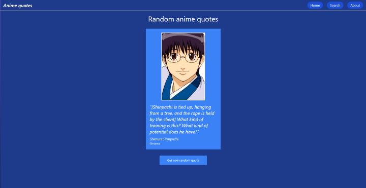
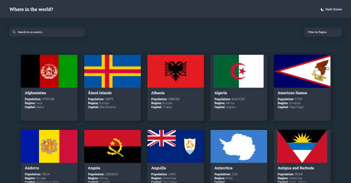

About me
Tech stack
HTML
CSS
JS
SASS
TailwindCSS
Styled components
ReactJS
Redux
NextJS
Jest
My projects
Anime quotes
Anime Quotes is website which I created for learning purpose. I wanted to practice Tailwind. I used Anime-chan API for anime quotes and Jikan - Unofficial MyAnimeList.net REST API for characters photo.

Github
Countries website
I created countries website for Frontend Mentor challenge. User can search country by name and filter by region. It was probably my first project with using external API.
Github